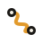
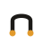
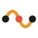

Every mark fuses a strand of nodyra with the connection between two nodes — the literal metaphor of a workflow canvas. Monoline, rounded caps, one warm accent. Built to read from a 16px favicon up to a billboard.



--ink #1C1A17--amber #E29A2C--coral #E0573E--paper #F6F1E7